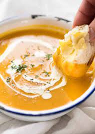

Pumpkin Soup Recipe

Halloween is coming and pumpkins are in season again! This recipe is great for accompanying your Halloween feast. It will make good use of the flesh that are carved out of your pumpkin lantern decorations.
This soup is creamy and flavorful that will really uplift your Halloween spirits! Come and try this one out!
Ingredients:
- Pumpkin flesh
- Cream
- Chicken stock
- Salt and pepper
- Onion
- Garlic
- Butter
Steps:
- Roast the pumpkin flesh on the pan with butter and set aside.
- On a pot, saute garlic and onion with butter until the onions have become translucent.
- Add the roasted pumpkin.
- Add the chicken stock just enough until the pumpkin is covered.
- Put on the lid and wait for it to simmer until the pumpkin have softened.
- Add salt and pepper to taste.
- Remove from heat and wait for it to cool down a bit.
- Scoop the pumpkin soup from the pot and put it in the blender to make it a puree. Add a little water if it has become too thick.
- Transfer the puree back into the pot and into a low heat.
- Add the cream and stir until it simmer.
- Add salt and pepper to taste.
- Serve and enjoy!